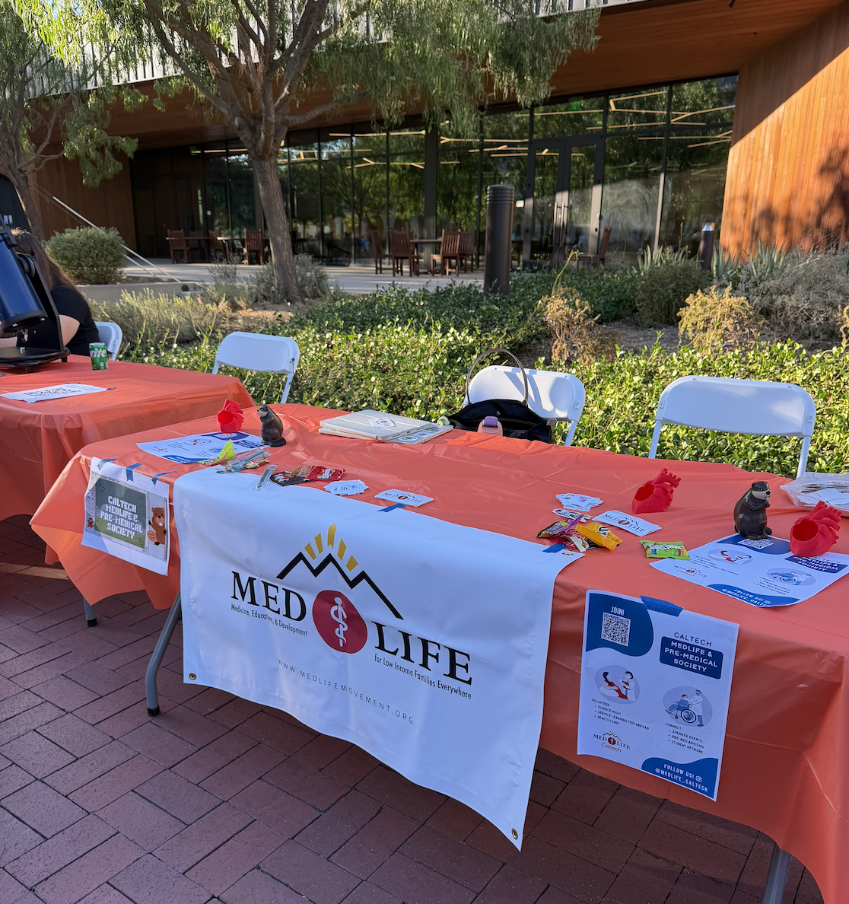
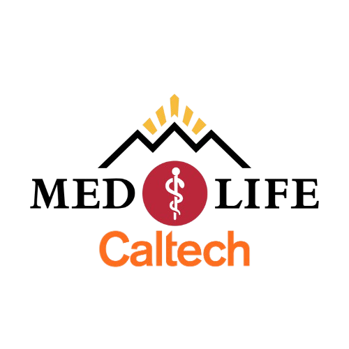
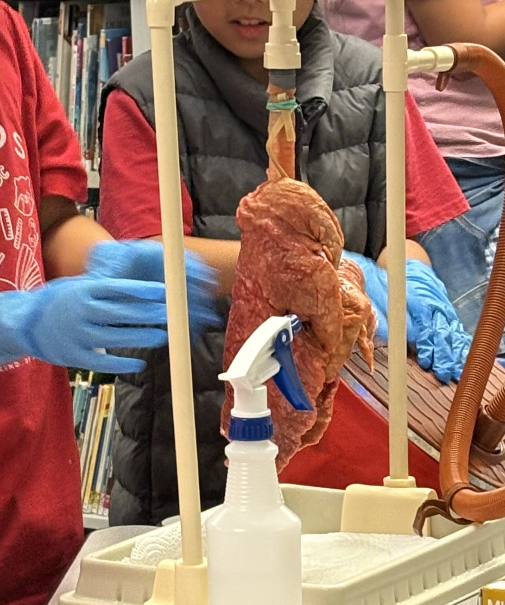
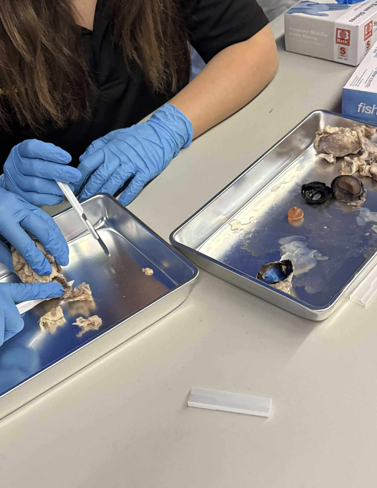
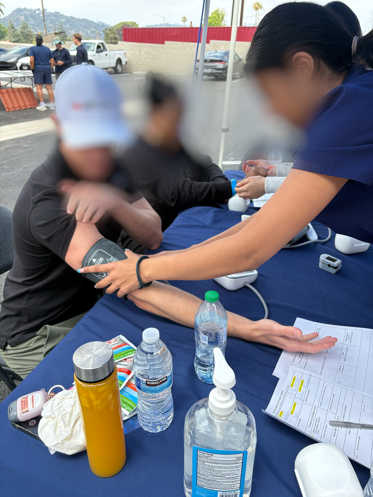
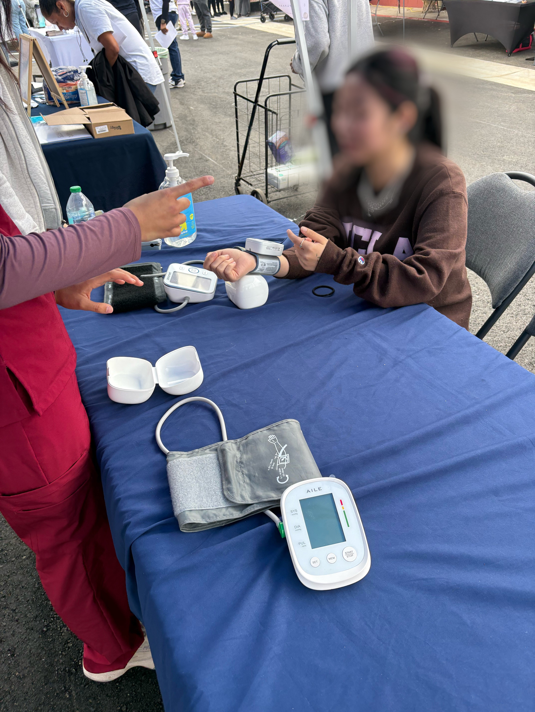
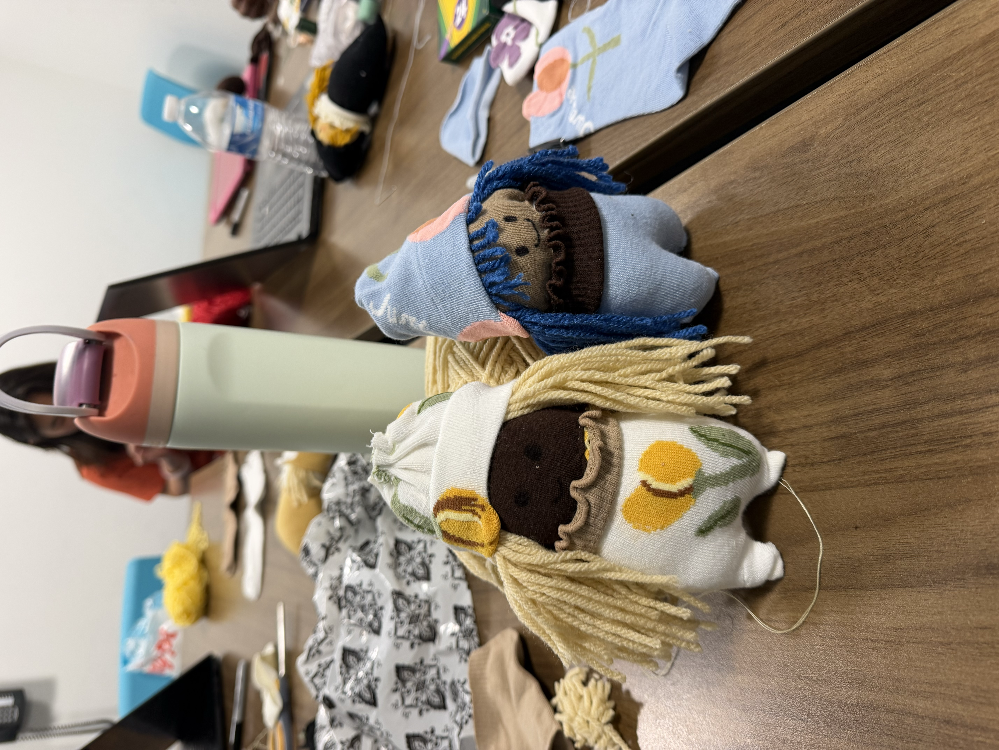
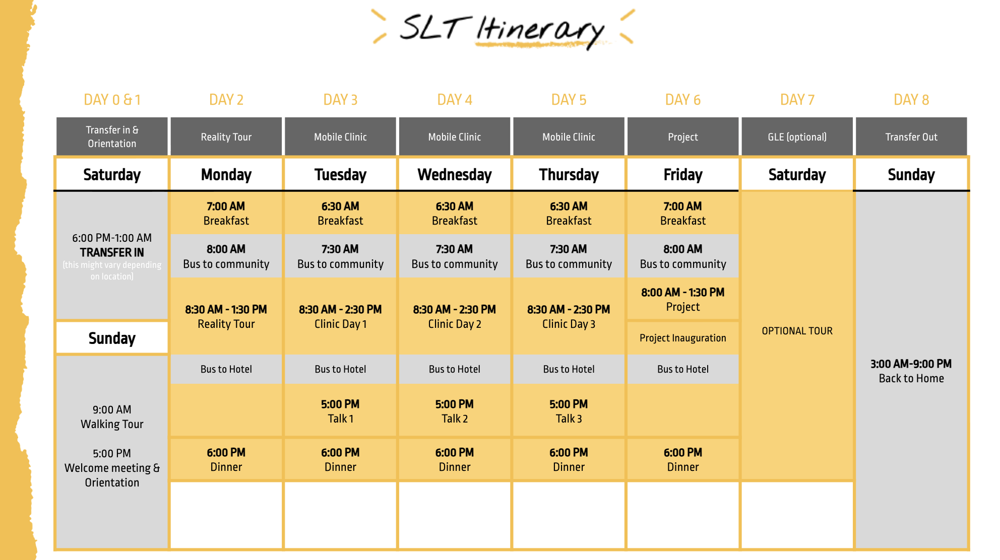

COMMUNITY
General meetings
Our general meetings are a great opportunity to meet the club, connect with fellow students, and talk about pre-med resources and ways to get involved.
Pictured: our club fair table.

CALTECHPRE-MED & MEDLIFECURIOSITY. COMPASSION. COMMUNITY.
Explore healthcare, connect with fellow students, and turn a shared interest in medicine into meaningful action.
Caltech Pre-Med & MedLife Club · Pasadena, CA
01 / ABOUT US
Caltech MedLife is a chapter of the international MEDLIFE organization. Our club at Caltech also serves as the Pre-Medical Society. We focus on providing prehealth volunteer service opportunities for students interested in medicine, public health, and social impact.
Explore medicine, public health, and social impact through speaker series, pre-medical resources, and advice from past students.
Meet fellow students interested in healthcare, share experiences, and build connections at club gatherings.
Get involved in prehealth volunteer service opportunities and connect your interest in healthcare with community service.
02 / EVENTS
A look at the gatherings and service experiences that bring our community together.
Swipe, scroll, or use the arrow keys to explore our highlights.

Our general meetings are a great opportunity to meet the club, connect with fellow students, and talk about pre-med resources and ways to get involved.
Pictured: our club fair table.


At Science Nights, we partner with the Caltech CTLO to visit local school communities and present hands-on demonstrations and activities such as an inflatable pig lung and organ dissections.


We helped provide preventive health screenings for local residents, taking blood pressure, height, and weight measurements and conducting vision tests.

We partnered with the Caltech Y for Make a Difference Day, where we made sock dolls and put together care packages for Huntington Hospital.
1 / 4
LOOKING AHEAD
Plans include after-school science activities for local elementary students in collaboration with the Caltech Y.
Support K–12 students with cancer or other serious medical conditions and their siblings through free virtual tutoring. Our planned partnership offers a way to share your academic interests and connect with students who need support.
The expected commitment is a 45–60 minute session each week for at least one semester.
Explore Pediatric Hope Project ↗
Partnership participation and scheduling details are subject to confirmation.

Sample itinerary; subject to change depending on the trip.
Our proposed trip to Lima, Peru, is an opportunity to learn about healthcare access while supporting community-led service. MEDLIFE trips bring volunteers together with local professionals and community members for mobile clinics, development projects, and educational activities.
You don’t need to be a pre-med student to get involved. Our plans welcome students across Caltech who are interested in service and global health.
Caltech trip arrangements are subject to confirmation. See MEDLIFE’s website for program information and FAQs.
03 / PRE-MED RESOURCES
Explore your interests, find advising support, and prepare for your path into medicine.
Requirements vary by medical school. Work with your advisor and consult official sources for current requirements and deadlines.
Career Achievement, Leadership, and Exploration (CALE) provides pre-health advising, application support, and opportunities to explore healthcare careers.
Lori is our club advisor and a Caltech pre-health advisor. Reach out for guidance on exploring medicine and planning your next steps.
leiland@caltech.eduMedical school and Caltech option requirements can change, so make sure to confirm with the official websites.
| Pre-Med Requirement | Caltech Course(s) | Category |
|---|---|---|
| Mathematics (1 Year: Calc + Stats) | Ma 1abc (Calculus) + Ma 3 / Be/Bi 103a/b (Stats) | Core / Major |
| General Physics (1 Year + Lab) | Ph 1abc + Ph 3 | Caltech Core |
| General Chemistry (1 Year + Lab) | Ch 1ab + Ch 3a | Caltech Core |
| General Biology (1 Year + Lab) | Bi 8 , Bi 9 , + Bi 10 | Non-Core Addition |
| Scientific Writing / HSS (1 Year) | 99 units HSS + 3 units Writing | Caltech Core |
| Organic Chemistry Lecture (2 Terms) | Ch 41abc | Non-Core Addition |
| Organic Chemistry Lab (1 Term) | Ch 7 , Ch 8 , or Ch/ChE 9 | Non-Core Addition |
| Biochemistry Lecture (1–2 Terms) | Ch/Bi 110ab | Non-Core Addition |
| Biochemistry Lab (1 Term - Recommended) | Ch 11 | Non-Core Addition |
| Behavioral Sciences | Psy 13 | Caltech Core option |
| Upper-Division Bio Electives (Recommended) | Bi 114 (Immunology) , Bi 122 (Genetics) , Bi 145ab (Tissue and Organ Physiology) | Non-Core Addition |
Two terms of organic chemistry fulfill the prerequisite; Caltech offers a three-term sequence, Ch 41abc. Your major may require the full sequence. Check individual medical schools for their specific requirements.
| Non-Core Pre-Med Req | Biology | Bioengineering | CNS | Chemistry | Phys/ ME / CS / EE |
|---|---|---|---|---|---|
| Organic Chem Lecture ( Ch 41ab ) | Covered (Required: Ch 41abc ) | Partially Covered (1st term req; add Ch 41b ) | Covered (Fulfills Analytical Science core) | Covered (Required: Ch 41abc ) | Not Covered (Must add as general electives) |
| Organic Chem Lab ( Ch 7, Ch 8, or Ch/ChE 9 ) | Not Covered (Add Ch 7 , Ch 8 , or Ch/ChE 9 ) | Not Covered (Add Ch 7 , Ch 8 , or Ch/ChE 9 ) | Not Covered (Add Ch 7 , Ch 8 , or Ch/ChE 9 ) | Covered (Required: Ch/ChE 9 ) | Not Covered (Add Ch 7 , Ch 8 , or Ch/ChE 9 ) |
| Biochemistry Lecture ( Ch/Bi 110ab ) | Covered (Elective credit / core option) | Covered (Fulfills major track requirements) | Optional (Fulfills major electives) | Covered /Optional (non-biochem) (Satisfies chemistry option electives) | Not Covered (Must add as general electives) |
| Biochemistry Lab ( Ch 11 - Recommended, not required by most schools ) | Not Covered (Recommended addition if needed) | Not Covered (Recommended addition if needed) | Not Covered (Recommended addition if needed) | Covered/Optional (non-biochem) (Fulfills chem lab requirement) | Not Covered (Recommended addition if needed) |
| Upper-Division Bio Electives ( Bi 114, Bi 122, Bi 145ab - Recommended, not required by most schools ) | Covered (Fulfills major upper-level biology reqs) | Partially Covered (Track electives allow bio courses) | Optional (Can satisfy electives) | Not Covered (Must add as general electives) | Not Covered (Must add as general electives) |
Hospital volunteers can help patients and visitors navigate, provide companionship, and support hospital teams. Explore each program’s roles, training, and time commitments before applying.
Service outside a clinical setting is another way to connect with your community. Explore education, arts, history, and local government opportunities:
Shadowing offers a closer look at physicians’ work and different medical specialties.
Check program websites for current eligibility, availability, and application requirements.
Started in 2025, our pre-med seminar series with Joel Ehrenkranz, MD, and Alfredo Sadun, MD, PhD, explores medicine through science, history, and the humanities.
Past topics have included:
Ask the club about future sessions.
The MCAT is a roughly 7.5-hour exam with a maximum total score of 528, covering chemical and physical foundations, biological and biochemical foundations, critical analysis and reasoning, and psychological, social, and biological foundations. Use AAMC for current exam details and registration dates.
Here are some possible timelines to discuss with your advisor:
Consider allowing roughly 3–6 months for preparation, depending on your schedule. Your coursework, readiness, and application plans should guide your timeline.
Here are a few popular options to explore—pick what works for you.
| Comparison | MD Pathway | Both | MD-PhD Pathway (MSTP) |
|---|---|---|---|
| Primary Career Goal | Full-time clinical practice, patient care, or clinical academics. | Medical licensure, patient care, and residency training. | Physician-scientist leading a basic or translational research lab alongside clinical practice. |
| Program Length | 4 years ; can often also pursue other dual degrees | Complete core medical school curriculum & USMLE exams | 7- 8 years (typically 2 years med school → 3-4 years PhD → 2 years med school) |
| Financial Support | Tuition & living expenses covered via loans, scholarships, or self-funding. | Eligible for institutional financial aid | Full tuition waiver + annual stipend for living expenses (MSTP/NIH funded) |
| Research (in medical school) | Sometimes o ptional; can often also pursue an additional research yr | Understanding evidence-based medicine and clinical research | M any hours of research, publications, thesis defense |
| Admissions Focus | Clinical exposure, direct patient care, community service, leadership | High GPA, high MCAT score, strong academic prerequisites, clinical exposure, strong LORs | Extensive independent research experience, strong PI LORs, 2 extra AMCAS essays |
| Post-Graduation Path | Residency training (3-7 years) → Attending Physician | Residency training (3-7 years) | Residency / PSTP (Physician-Scientist Training Program) fellowship (3-7 years) |
Program length, funding, and admissions expectations vary. Confirm details with individual programs.
Make time for research, clinical exploration, volunteering, and interests outside medicine. AMCAS grade conversions may vary from that of Caltech. Overall and science GPA is also reported separately.
Official resource links reviewed October 27, 2026.
04 / BLOG
Study strategies and firsthand experiences from Caltech pre-meds.
STUDY GUIDE
Balancing MCAT preparation with a Caltech courseload is challenging. Here is a resource roadmap based on students’ study experiences.
Study resources and timelines reflect personal experience. Check AAMC for current exam information.
The goal is to bridge the gap between Caltech coursework and the ways the AAMC tests your knowledge. Prepare for all four sections: Chemical and Physical Foundations of Biological Systems (C/P), Critical Analysis and Reasoning Skills (CARS), Biological and Biochemical Foundations of Living Systems (B/B), and Psychological, Social, and Biological Foundations of Behavior (P/S).
For a quick daily warm-up, consider Kaplan’s Question of the Day. When choosing books, compare editions and exam coverage rather than assuming a particular edition is necessary.
Students contributing to this guide suggest beginning focused practice roughly one to one-and-a-half months before test day, adjusting for your own schedule and readiness.
The MCAT requires endurance and data interpretation as well as scientific knowledge. Give yourself time to adjust to the question style, and don’t let a difficult practice exam discourage you. Happy studying and good luck!
STUDENT EXPERIENCE
A firsthand look at pediatric medicine through the Caltech/Children’s Hospital Los Angeles Preceptorship Program.
For many Caltech students, the transition from doing sets or lab work to the clinical atmosphere of a hospital can feel like entering a different world. I had the opportunity to join the Caltech/CHLA (Children’s Hospital Los Angeles) Preceptorship Program. If you are considering medicine, especially pediatrics, it offers a close-up view of physician life across specialties.
The program began with breakfast with pediatricians, who shared their journeys into medicine and their day-to-day work. One valuable takeaway was the CART framework for the different responsibilities physicians balance:
Seeing that balance was especially eye-opening for those of us interested in the physician-scientist path.
During my two-week rotation, I shadowed a new department each day for about four to eight hours, sometimes with one physician in the morning and another in the afternoon. My rotations included General Pediatrics, Neonatology, ENT, Emergency Medicine, Endocrinology, PICU, Gastroenterology, and Cardiology.
That variety showed me the differences between inpatient and outpatient care. On morning rounds, I watched medical students, residents, nurses, and physicians collaborate on complex cases. In outpatient clinics, I observed checkups and follow-ups and the long-term relationships pediatricians build with families.
Email Lori Eiland at leiland@caltech.edu to ask about the pre-med mailing list and the current Caltech application process.
For the experience described here, announcements arrived around March or April, with the program taking place in late August to early or mid-September, after SURF. The application included a résumé and essay response, followed by an interview for selected applicants. Confirm the current schedule and requirements with your advisor.
This experience gave me a clearer picture of a specialist’s daily life and the dedication involved in caring for young patients. If you are curious about clinical medicine, I strongly recommend exploring the program.
05 / THE TEAM
President
Vice-President
Treasurer (Fundraising)
Secretary
Marketing/Social Media Director
Recruitment Director
Engagement Director
Meet the students who helped build our club.
President
Vice-President
Treasurer (Fundraising)
Secretary (Engagement Director)
Secretary (Engagement Director)
Secretary (Social Media and Marketing Director)
SLT/Travel Director
President
Vice-President
Treasurer
Engagement Coordinator
Engagement Coordinator
Travel Director
Expansion Coordinator
President
Vice-President
Vice-President
Engagement Coordinator
Travel Director
Expansion Coordinator
President
Vice-President
Treasurer
Secretary
Social Director
06 / JOIN US
Everyone at Caltech is welcome. Explore healthcare, volunteer with us, and connect with others who share your interests.
Email our ExComm to join the club or ask about our activities.
Email ExComm clarayu@caltech.edu ↗Follow us on Instagram @medlife_caltech ↗